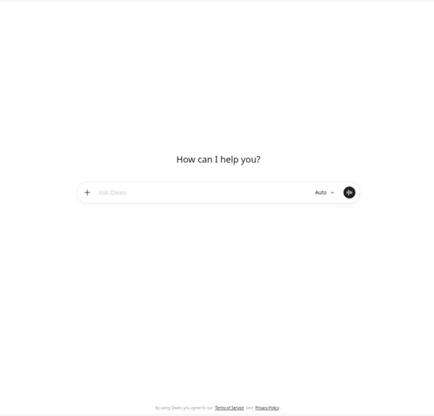
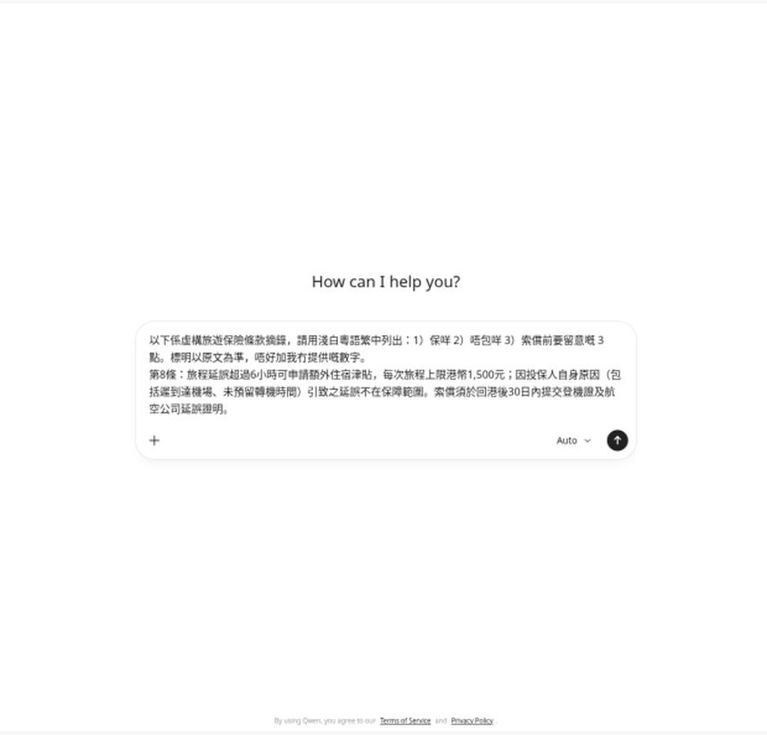
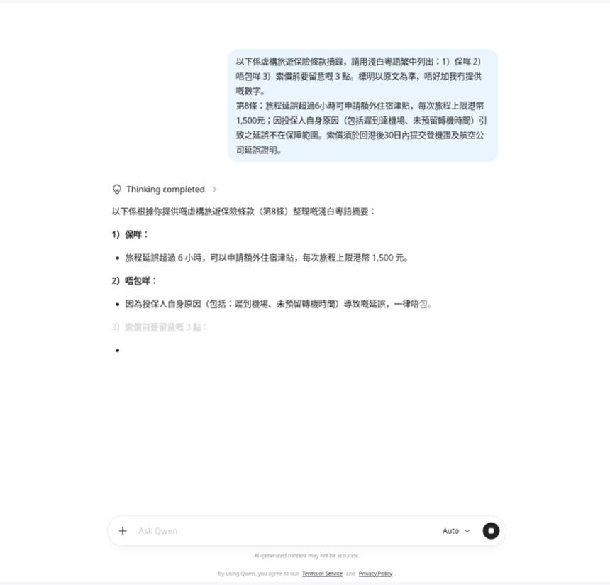
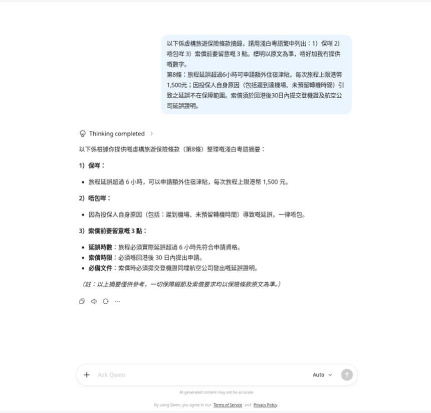

條款一段好長，想先睇懂先至問人。第26集用通義千問網頁版，貼一段虛構旅遊保險摘錄，叫佢用淺白粵語列：保咩、唔包咩、索償前 3 點。示範條款係虛構，唔好貼真實保單號。
Reel 一句講晒：通義千問｜條款變／3點重點
唔係法律或投保意見：回覆只係幫你讀一段字。保唔保、賠幾多，以保險公司俾你嗰份保單同批單為準。AI 可能錯，亦可能加你冇貼嘅數字。
你會學到
- 點樣開 chat.qwen.ai，貼一段條款而唔貼保單號
- 點樣叫佢用淺白粵語列保咩、唔包咩、索償前 3 點
- 點樣對住回覆核對原文，數字以保單為準
開始前準備
- 瀏覽器開 chat.qwen.ai（示範頂欄見到 Qwen3.7-Plus；右上有登入，示範未登入都開到輸入框）
- 只貼你想問嘅嗰幾句條款。保單編號、身份證、電話、地址先遮走
- 手邊留返原文，等陣對數字

可抄提示
下面係片入面貼嘅示範。第8條係我哋寫嘅虛構摘錄，唔係任何保險公司嘅真條款。你自己用就換上已遮走保單號嘅原文，唔好將呢段當真實保障。
以下係虛構旅遊保險條款摘錄。請用淺白粵語繁中列出：1) 保咩 2) 唔包咩 3) 索償前要留意嘅3點。標明以原文為準，唔好加我冇提供嘅數字。 第8條：旅程延誤超過6小時可申請額外住宿津貼，每次旅程上限港幣1,500元；因投保人自身原因（包括遲到機場、未預留轉機時間）引致之延誤不在保障範圍。索償須於回港後30日內提交登機證及航空公司延誤證明。
3 步做法
-
貼條款：將虛構摘錄連同「保咩、唔包咩、索償前 3 點」貼入輸入框。示範條款係虛構，唔好貼真實保單號。
提示寫明「以原文為準，唔好加我冇提供嘅數字」，係想減少佢自己作一個金額出嚟。真保單用之前，先遮走保單編號同個人資料。
未送出之前，原文仍然留喺輸入框，方便你再睇一次有冇貼多咗。

真實畫面（2026-10-11 自行截圖）：虛構第8條貼好，未送出。冇真實保單號。 -
撳送出：撳右邊紙飛機送出。叫佢用淺白粵語列：保咩、唔包咩、索償前 3 點。
送出後，你貼嘅原文會變成上面嗰個氣泡，下面先至係回覆。示範見到「Thinking completed」，然後先分點作答。模式示範係 Auto。
未出齊三點就唔好截圖當完成。等到「索償前」嗰點都出咗先睇。

真實畫面（2026-10-11 自行截圖）：撳送出之後，回覆開始分「保咩」「唔包咩」。 -
睇 3 點重點：對住回覆核對原文。示範大致分成：保咩（延誤超過 6 小時先可以申請額外住宿津貼，每次旅程上限港幣 1,500 元）、唔包咩（遲到機場、未預留轉機時間呢類自身原因）、索償前 3 點（要真係超過 6 小時、回港後 30 日內、交登機證同航空公司延誤證明）。
呢啲數字全部嚟自上面嗰段虛構摘錄。回覆如果多咗一個金額、日數或者「一定賠」，而原文冇寫，就當佢加料，唔好信。
數字以保單為準。呢頁唔係法律或投保意見。AI 可能錯。

真實畫面（2026-10-11 自行截圖）：3 點出齊。每個數字對返虛構原文，唔好當真實保單。
常見錯誤／注意事項
- 貼真實保單號：示範條款係虛構，唔好貼真實保單號。身份證、電話、地址一併遮走。
- 當回覆就係保障：AI 會縮句，亦會漏除外責任。賠唔賠以保險公司文件為準。
- 唔對數字：6 小時、1,500 元、30 日都要逐個對返你貼嗰段。回覆多咗出嚟嘅數字唔好用。
- 開錯入口：chat.qwen.ai 同 qianwen.com 唔係同一套帳戶。開到邊個、使唔使登入，以你當日見到嘅頁為準。
- 用呢段虛構條款去索償：第8條係我哋寫嚟示範，唔係任何保單嘅真身。
示範條款係虛構，唔好貼真實保單號。
香港用戶留意
示範用瀏覽器開 chat.qwen.ai，頂欄係 Qwen3.7-Plus，送出掣係紙飛機圖示，冇裝 App。中文站 qianwen.com 係另一個入口。免費用量、登入同地區限制以當日官方為準。
官方說明
- Qwen chat.qwen.ai
2026-10-11 核實：網頁入口回 200。示範貼虛構條款 → 撳紙飛機送出 → 回覆分「保咩／唔包咩／索償前」；頂欄見到 Qwen3.7-Plus - 千問 qianwen.com
2026-10-11 再打開回 200。中文入口，同 chat.qwen.ai 唔係同一套帳戶
（兩個入口當日打開；逐步畫面係同日截圖。模型名同登入要求可能更新，以官方為準）
原帖
睇原 Reel ↗（2026-10-12 發佈）